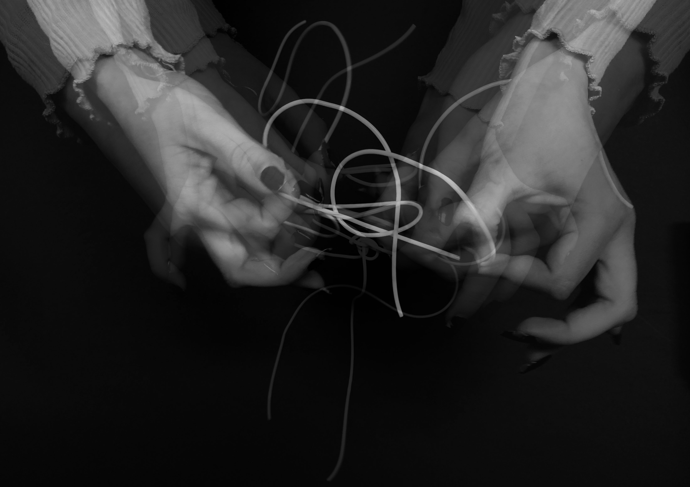
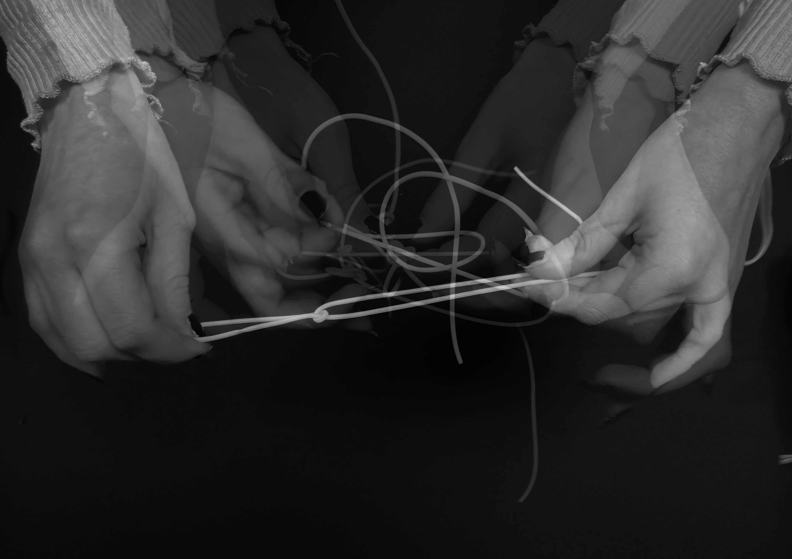
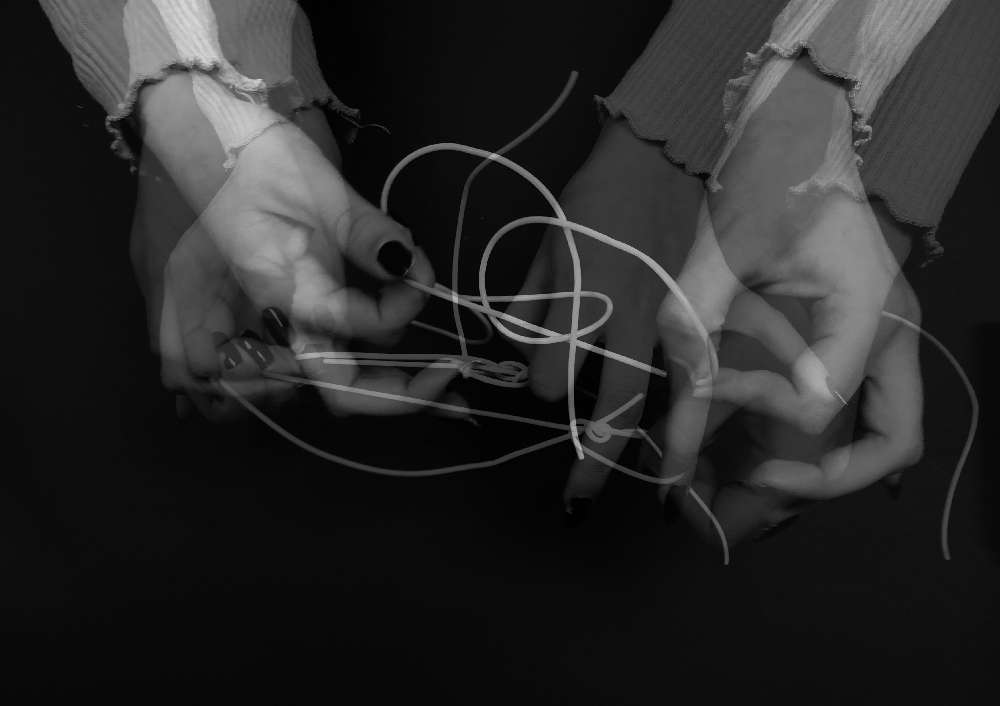
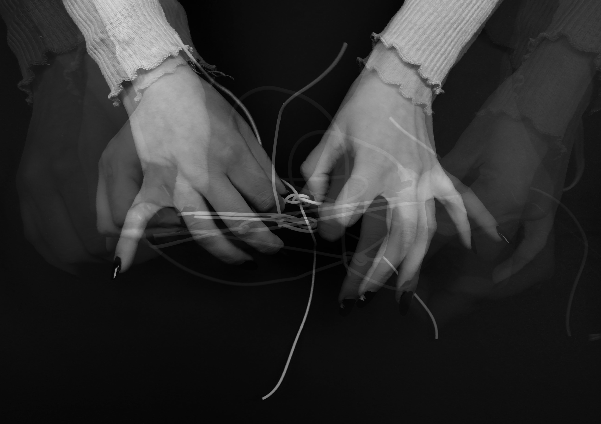

Avant le dénouement
Pour ce projet autour du sujet "avant le dénouement" j'ai souhaité réaliser une série de photographies autour du noeud et plus précisément sur cet instant si particulier qui survient juste avant de dénouer celui-ci. Ici les mains se débattent avec le noeud. La superposition d'images, qui rappellent la chronophotographie, crée une impression de frustration, d'un geste difficile. Cette impression est aussi reforcée par les positions des doigts qui s'articulent et deviennent presque monstrueux. Pour ce travail je me suis notamment inspirée du travail de l'artiste Claude Cahun qui provoque la même sensation d'étrangeté.




